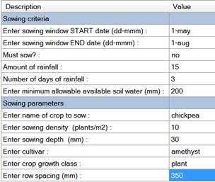
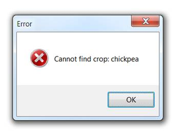
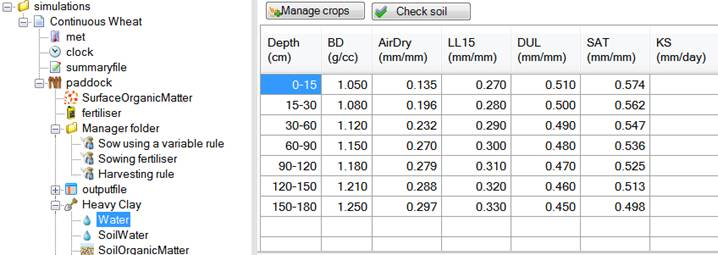
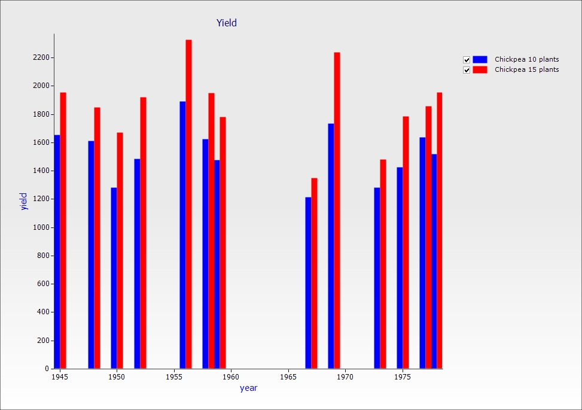
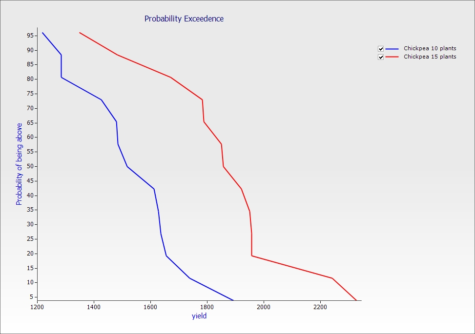

Exercise 5: Chickpea Sowing Rates – 40 Year Runs
In this exercise you will use sowing rules to plant Chickpea crops and observe yield probabilities for a 40 year period given a half full soil moisture profile at sowing. We will compare two sowing rate strategies for these conditions with the goal of maximising yield. The weather will be different each year but the soil starting conditions will be the same.
By default, in long term simulations (i.e. longer than one year), the end of one years’ simulation becomes the starting point of the next year. This is useful if you are interested in seeing the degradation or improvement of the soil over a long time period. But what if you wanted to work out what the best strategy would be for the current year using weather scenarios from the past 40 years? To do this we could create 40 different simulations all with the same starting conditions but a different weather file (which would be a lot of work), or we could run the same simulation over 40 years and just reset the starting conditions each year (much simpler).
We can then try different management strategies to see which one would have worked best under the past 10 years weather scenarios.
1. Start a new simulation using "Continuous Wheat.apsim"
2. Save the file as "Module5.apsim"
3. Change the simulation start and end dates to 1/01/1940 - 31/12/1980
4. Select the Heavy Clay soil from the Training Soils toolbox. If you can’t see it, see Module 1 to add it. Delete the old soil.
5. Set the Starting water to 50% full - filled from top.
6. Set the Starting nitrogen to 20 kg/ha NO3 and 0 kg/ha NH4, evenly distributed.
7. Change the surface residue type to sorghum (don't forget to rename the pool name to "sorghum" as well), initial surface residue: 550 kg/ha, C:N ratio of 76, leave the Fraction of residue standing as is.
8. Replace the wheat crop with chickpea. (Standard toolbox -> Crops)
9. Replace the Sowing rule with the Sow using a variable rule from the toolbox and enter the values below:

The last three criteria mean that for a crop to sow within the given window at least 15mm of rain must have fallen in the last three days and there must be a minimum of 200mm soil water available.
10. Run the simulation. You might see the following error. If you don't, have a look at the summary file, it will be there as well:

This means Apsim is unable to find certain crop properties in the soil. This is because we’re using a crop that has not been parameterised for this particular soil.
11. Click ok to dismiss the error. Click on the Water node under Heavy Clay soil.

Every crop used in a simulation must have an entry in the Water node that specifies crop specific limits. To add extra crops, click “Manage crops”. Click ‘wheat’ and rename it to ‘chickpea’. Copy the values from sorghum. The real values entered must be determined experimentally, but they really only affect the output in severe water stress so it won’t matter here. Also note the PAWC column will update automatically when you click another node.
12. Now we’ve fixed the error we can continue. Remove the sowing fertiliser rule.
13. Make sure the harvesting rule will harvest chickpea, not wheat.
14. Add the rule: Reset water, nitrogen and surfaceOM on fixed date. Use 1-may for the reset. Make sure the name of the soil module and the name of the surface organic matter module is correct. We want to reset water, nitrogen and surface organic matter to remove the year to year effects. Move it up to make sure it’s the first rule under the Manager component. The order is important in the Manager folder. It is the order the rules are run in (right click on the rule and select "Move up". You can also use the shortcut Ctrl + Up).
15. Report the following variables:
|
Component
|
Variable
|
|
Clock
|
year
|
|
Chickpea
|
yield
|
16. Rename simulation to "Chickpea 10 plants"
17. Make a copy of the simulation and create a new one with 15 plants/m2
18. Rename this copy to "Chickpea 15 plants".
19. Run the simulations.
20. Graph both output files creating a Year vs Yield by using a Graph component. Drag an XY graph onto the Simulations component from the Graph toolbox. To get a bar graph, in the Plot component select "Bar" in the "Type" drop down list.

21. Create a Probability Exceedence plot of Yield by using a Graph component. Drag a Probability Exceedence component onto the Simulations component from the Graph toolbox. Select the Yield as the X variable and leave Probability as the Y variable.
